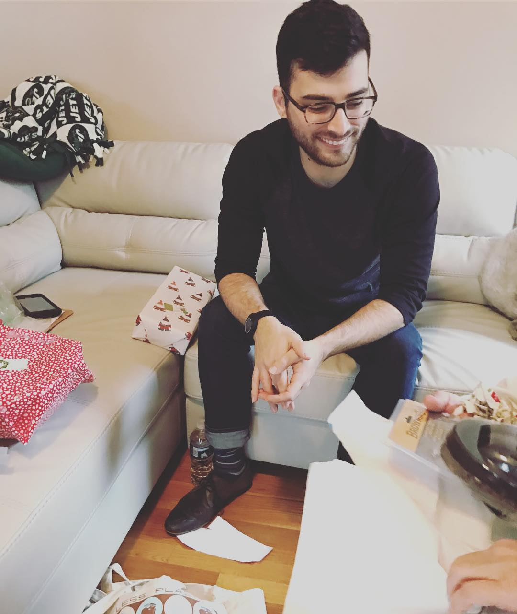

ABOUT ME
My name is Jason M. Aron, I'm a multidisciplinary designer from the United States.
Starting at a very young age, I was exposed to the fine arts and many mediums such as pastels, charcoal and acrylic paints. I spent my entire youth holding a pencil or brush with the intentions of creating something new.
In 2016 I decided to pursue the fine arts with a little more focus and started an apprenticeship with American Borque Artist Stephen Cefalo. After completing my apprenticeship I wanted to take my newly refined skillsets and implement that into a digital setting. I then decided to pursue further education in web developement. In late 2017 I started a full stack development boot-camp at UNC Chapel Hill.
My passions truly lie within art and design in every way. I am full of energy and always eager to create! My focuses are in web development, web animation, and illustration. I look forward to working with you!
CONNECT WITH ME